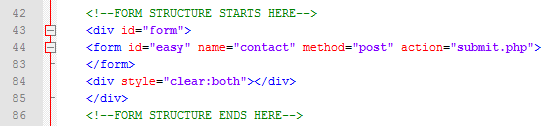
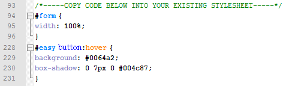
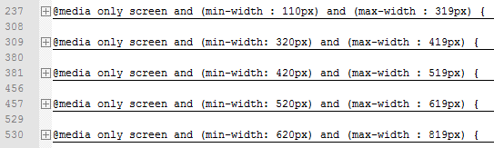

Thank you for purchasing my script. If you have any questions that are beyond the scope of this help file, please feel free to email me at hello@davidpottrell.co.uk.
Thank you again for trying out this script!
- What is Easy Contact Form
- What is included
- How to install
- Step One: HTML Structure
- Step Two: CSS Files and Structure
- Step Three: JavaScript Files and Structure
- Step Four: PHP File and Explanation
- Step Five: Optional Responsive CSS
- Credits and Sources
- FAQ
- Changes
What is Easy Contact Form
This Easy Contact Form is perfect for any style of website that's in need of a contact form. Not only does it validate, but it validates is a stylish way.
The main feature that sets this form apart from the others is the fact that it uses captcha technology to stop spam bots from abusing the form but also ensures the form is easy enough to use for humans. As well as this it also uses PHPMailer in conjunction with JavaScript validation, this ensures that any information sent is valid and secure.
By using JS validation alongside PHP the form ensures the user experience is a nice one. The JS validation is client-side which saves on bandwidth and loading times. If the user has Javascript disabled the form will use its PHP validation to remain validity.
What is included
index.html - contains the form submit.php - contains php validation and submit process /form/ - /form/captcha.png - captcha background /form/class.phpmailer.php - phpmailer /form/form.js - contains JS validation and animation /form/image.php - captcha /form/league.tff - captcha font /form/refresh.png - captcha refresh icon /form/bg.png - background for demo style.css - style for demo and form /README/ - read me files
How to install
This form should be relatively easy for those who are experienced with HTML/JS/PHP to implement, however not everyone is as comfortable with coding. It's for this reason I've created the 6 simple steps for you to follow to get the form up and running in its basic form.
Step One: HTML Structure
This form is wrapped in its own div with the id 'form'. Simply open up index.html and copy the html form from line 42 to line 86.
Now paste this code where you would like the form to appear on your web page - Anywhere between <body> and </body>.
Step Two: CSS Files and Structure
Moving onto the CSS. To use this form on an existing web page that already has a CSS stylesheet, open style.css and copy the code from line 93 to line 231 and paste into your own stylesheet.
Step Three: JavaScript Files and Structure
There are two JavaScript files that need to be inserted into the <head> </head> section of your page in order for the form to work correctly.
The JS Library if you haven't already included the it on your website already:
<script src="http://code.jquery.com/jquery-1.9.1.min.js" type="text/javascript"></script>The EasyForm JavaScript file, include this anywhere in your <head> section:
<script src="form/form.js" type="text/javascript"></script>
Please note: Be sure to update the path to /form.js if need be!
Step Four: PHP File and Explanation
If you just want to get the form working there's only one change you need to make to the submit.php file. On line 4 enter your email address where it asks

Save the file and upload
Step Five: Optional Responsive CSS
It is recommended that you know the basics of RWD (Responsive Web Design) before attempting this as the form will only respond to screen sizes if the webpage it's placed on is responsive already.
Start by copying and pasting line 6 into your head section of your web page.
Copy and paste the CSS from line 233 to line 579, including the media queries, into your own CSS file at the very bottom of your file
Please note: If you are already using a mobile stylesheet you'll need to ensure the break points of the Easy Form mobile CSS remain the same unless you modify the dimensions of the form to suit your own breaking point rules. If you were to simply paste the queries in, disregarding the breaking points of the contact form it may not resize when needed.
Credits and Sources
JS Library - Pretty standard and popular JS Library, used for the JS side of the form (animation etc)
PHPMailer - The mainframe of the form, this script ensures the PHP validations are secure and valid
FAQ
I need help!
No problem! Just drop me an email at hello@davidpottrell.co.uk I'll be more than happy to help. I always aim to get back to you within a day or at the very least the following day.
What are the requirements of the Easy Form?
Easy Form requires PHP5, GD Library and the jQuery library. FreeType is also required solely for the captcha text.
The success/error message appears too high on the page - Why?
The reason for this is the offset. The offset exists so that if you're using a fixed header, the messages can appear under it. If you wish to change/remove the offset, change the offset inside form.js where .offset().top - 0; occurs - Simply change it to .offset().top - 70px; or whatever height you wish.
The image captcha doesn't load
Be sure you are viewing the uploaded version of your form. The captcha uses server-side language so it can only be viewed online. Also ensure your path to the font the captcha is using is correct.
The form doesn't look right in certain browsers
If you're finding the form isn't working correctly or certain elements are not functioning, try adding HTML5 support to the browser. You can do his by including the following line into your <head> </head> section:
<script src="http://html5shim.googlecode.com/svn/trunk/html5.js"></script>
I want an extra field on the form, how do I add validations?
Depending on the sort of validation you're after, easy! Lets say you want to add the company field and have a minimum and maximum length.
Step 1: Open up your web page that contains the HTML form and add your new field (make sure you call it something unique, in this case Company) Save your file and open up form.js and submit.php
Step 2: In your form.js file - you should see some //headings that describes the code below it.
Step 3: Find and Copy the variable:
var i_name = $("input#name").val(); (Line 44)
and replace i_name and input#name with your new fields name
- Paste this in the same order as your form.
Step 4: Next we want to call this variable and validate its length. To do this, copy the name validation and modify it to check your new field:
if (i_YOUR_FIELD_NAME.length < 2)
errors = errors + "YOUR_FIELD_NAME field is too short or empty";
if (i_YOUR_FIELD_NAME.length > 21)
errors = errors + "YOUR_FIELD_NAME field is too long";
Step 5: Change the numbers to suit your needs, 2 being the minimum, 21 being the maximum.
Step 6: In your submit.php file the steps are very similar. If you have any queries regarding this feel free to contact me.
Step 7: Save your file and upload
When I try to send the form nothing happens
Are you testing the form online or offline? PHP is a server-side language, meaning it needs to be uploaded to a server for it to function and in this case, send the form.
Can I use this form on WordPress
EasyForm hasn't been designed for WordPress so unfortunately no admin GUI exists, however it is still possible to use the form in WordPress.
If you're using one theme, place the form files inside your theme directory and ensure all paths are correct (wp-content/themes/yourtheme/form/..).
Duplicate your themes page.php and rename it form.php then place the contents of index.html inside the page.
Update the paths to the form files inside page.php and form.js.
Create a new page that uses the form.php template and you're done!
Changes
-
08/12/2013
- Those pesky spelling mistakes are gone
- Slight font location changes to image.php
- Removed duplicate 'contacted by' from submit.php
-
18/09/2013
- New theme
- Responsive CSS
- Removed redundant code
-
05/07/2013
- Bugfix for Internet Explorer and Firefox where success/error messages would ignore the offset.
- Modified CSS padding for #verify to 8px to ensure text isn't cut off in Internet Explorer.
- Expanded FAQ regarding offset and image captcha
-
01/07/2013
- Revamped the support documents to help users install